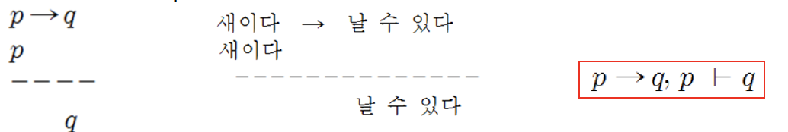

12th
명제 논리의 추론
추론규칙 (inference rule)
참인 논리식들이 논리적으로 귀결하는 새로운 논리식을 만들어내는 기계적으로 적용되는 규칙
긍정논법 (modus ponens)

부정논법 (modus tollens)

삼단논법 (syllogism)

논리융합 (resolution)
일반화된 추론규칙 - 긍정논법, 부정논법, 삼단논법의 규칙을 포함한 추론 규칙
두 개의 논리합절이 같은 기호의 긍정과 부정의 리터럴을 서로 포함하고 있을 때, 해당 리터럴들을 제외한 나머지 리터럴들의 논리합절을 만들어내는 것
논리융합식 (resolvent):
\[ P \lor q, \neg{P} \lor r \vdash q \lor r \]
추론규칙의 정당성 (sound)
추론 규칙에 의해 생성된 논리식은 주어진 논리식들이 논리적으로 귀결하는 것이다.
즉, 추론 규칙이 만들어낸 것은 항상 참이다.
추론 규칙의 완전성 (complete)
주어진 논리식들이 논리적으로 귀결하는 것들은 추론 규칙이 찾아 낼 수 있다.
정리증명 (theorem proving)
공리들을 사용하여 정리가 참인 것을 보이는 것
공리 (axiom)
추론을 할 때, 참인 것으로 주어지는 논리식
정리 (theorem)
공리들에 추론 규칙을 적용하여 얻어지는 논리식
구성적 증명 (constructive proof)
공리들에 추론 규칙들을 적용하여 증명을 만들어 보이는 증명
논리융합 반박 (resolution refutation)
증명할 정리를 부정(negation)한 다음, 논리융합 방법을 적용하여 모순이 발생하는 것을 보여서, 정리가 참임을 증명하는 방법

명제 논리의 지식표현
명제 논리를 이용한 지식표현
문장으로 표현된 지식으로부터 기본 명제들을 추출
각 명제에 대해 명제기호 부여
기본 명제들의 논리적 연결관계를 참고하여 대응되는 명제 기호들을 논리기호로 연결하여 논리식 구성
명제 논리로 표현된 지식에 대한 추론
명제기호가 나타내는 명제의 의미와는 무관
대수적인 기호연산을 통해서 추론 수행


술어 논리 (predicate logic)
명제의 내용을 다루기 위해 변수, 함수 등을 도입하고 이들의 값에 따라 참, 거짓이 결정되도록 명제 논리를 확장한 논리
술어 (predicate)
문장의 ‘주어 + 서술어’ 형태에서 서술어에 해당
대상의 속성이나 대상 간의 관계를 기술하는 기호
T 또는 F 값을 갖는 함수
ex) Student(John), Friend(John, Mary)
존재한정사(existential quantifier) \(\exists\)와 전칭한정사(universal quantifier) \(\forall\)사용
- 변수의 범위를 고려한 지식을 표현
\[ \exists~x~Friend(John, x) \]
John은 친구가 한 명은 있다.
\[ \forall~x~\exists~y~Friend(x, y) \]
누구나 친구가 한 명은 있다.
함수(function)
주어진 인자에 대해서 참, 거짓 값이 아닌 일반적인 값을 반환
술어나 다른 함수의 인자로 사용
항(term)
함수의 인자가 될 수 있는 것
항이 될 수 있는 것: 개체상수, 변수, 함수
- 개체상수, 변수는 항이다
- \(t_{1}, t_{2}, ..., t_{n}\)이 모두 항이고, f가 n개의 인자를 갖는 함수 기호일 때, \(f(t_{1}, t_{2}, ..., t_{n})\)은 항이다.
- 1과 2에 의해 만들어질 수 있는 것만 항이다.
술어 논리식에 대한 정형식
- \(t_{1}, t_{2}, ..., t_{n}\)이 모두 항이고, p가 n개의 인자를 갖는 술어 기호일 때, \(p(t_{1}, t_{2}, ..., t_{n})\)은 정형식이다.
- p, q가 정형식이면, 논리기호를 사용하여 구성되는 논리식 \(\neg{p}, p\lor q, p \land q, p\to q , p \equiv q\)도 정형식이다.
- p(x)가 정형식이고, x가 변수일 때, \(\forall{x}~p(x), \exists~x~p(x)\)는 정형식이다.
- 1, 2, 3에 의해 만들어질 수 있는 것만 술어 논리의 정형식이다.
\[ \forall{x}~\forall{y}~Hourse(x) \lor Dog(y) \to Faster(x, y) \]
\[ \exists{y}~Greyhound(y) \lor (\forall{z}~Rabbit(z) \to Faster(y, z)) \]
\[ Horse(Harry) \]
\[ Rabbit(Ralph) \]
\[ \forall~y~Greyhound(y) \to Dog(y) \]
\[ \forall~x~\forall~y~\forall~z~Faster(x, y) \land Faster(y, z) \to Faster(x, y) \]